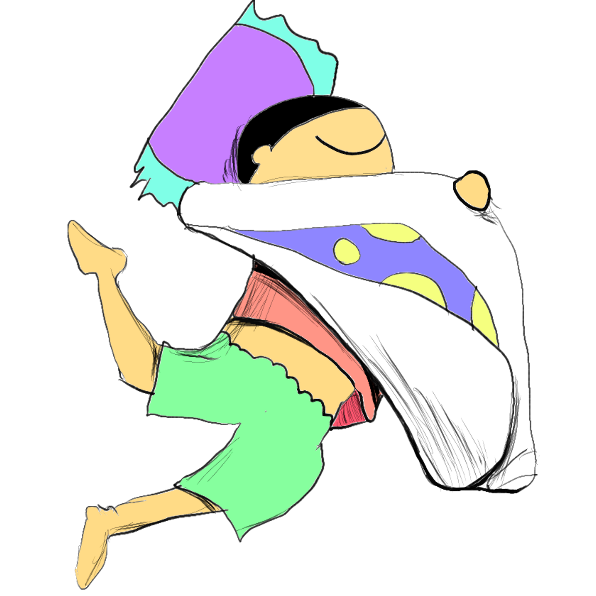
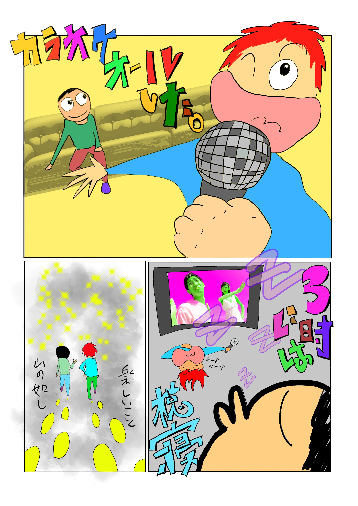

MY Portfolio

About
すべての道は、私につながる。
柴幸男の戯曲「あゆみ」のセリフです。学生劇団に所属していた際、
本戯曲を公演で使用しました。以来、このセリフは私の人生訓になっています。
どんな出来事も無駄
ではない。映画制作、漫画・イラスト執筆、現職で培った交渉力。その全てが、今後の私のキャリアに活き
ていく、活かして見せる、と考えています。
本サイトはそんな私が今まで歩んできた「すべての道」の
なかから抜粋し掲載させていただきました。
illustration
過去にブログ掲載用に描いたイラスト集です。

まち歩き企画
現職の「高槻まち歩き」イベントにて動画・パンフ類のデザインを担った際の制作物です。